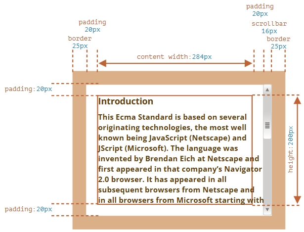
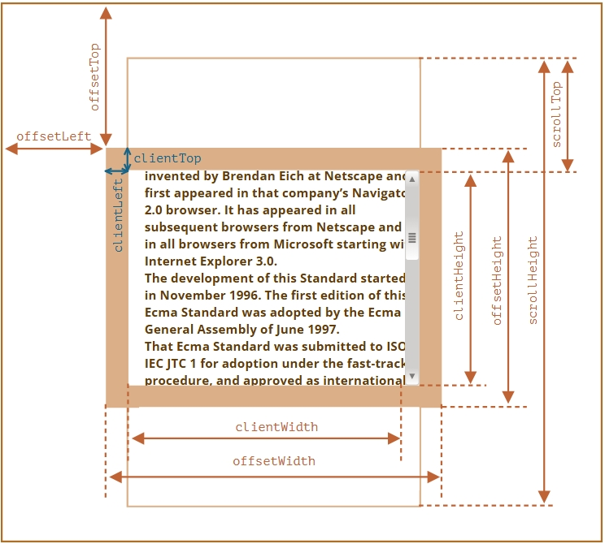
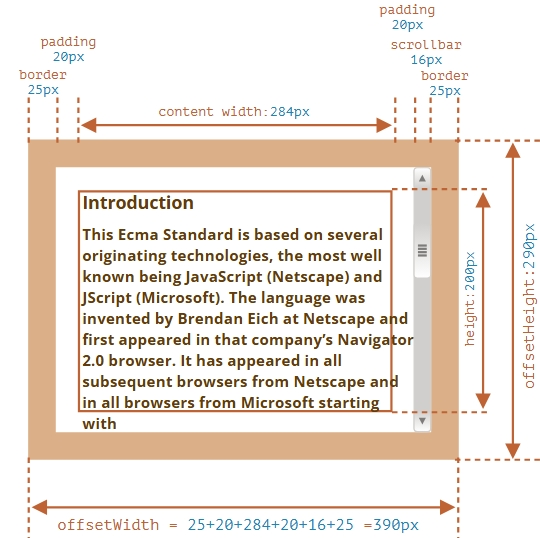
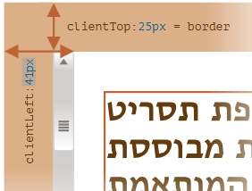
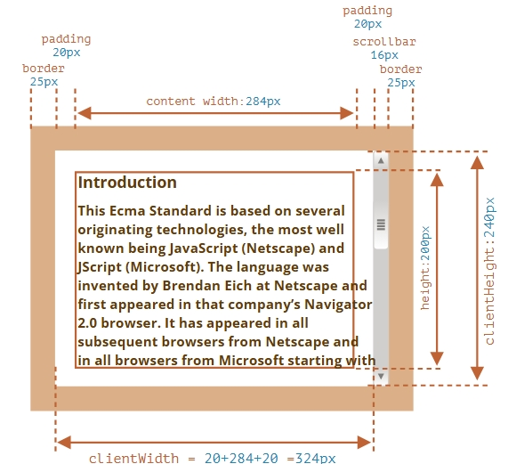
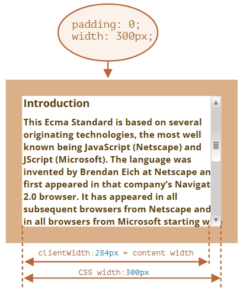

Простой пример
<div id="example">
...Текст...
</div>
<style>
#example {
width: 300px;
height: 200px;
border: 25px solid #E8C48F;
padding: 20px;
overflow: auto;
}
</style>
Таким образом получается следующее:

Метрики

Все эти стрелочки это свойства к которым можно обратиться и получить данные о расположении элемента. Начнём
рассматривать все эти свойства одно за другим.
offsetParent, offsetLeft/Top
Используются редко, являются самыми внешними метриками. offsetParent возвращает родительский элемент.
То есть, ближайший предок, который удовлетворяет следующим условиям:
- Является CSS-позиционированным (CSS-свойство position равно absolute, relative, fixed или sticky),
- или <td>, <th>, <table>,
- или <body>.
Существует несколько ситуаций, когда offsetParent равно null:
- Для скрытых элементов (с CSS-свойством display:none или когда его нет в документе).
- Для элементов
и .
- Для элементов с position:fixed.
Свойства offsetLeft/offsetTop содержат координаты x/y относительно верхнего левого угла offsetParent.
Именно предка. в который вложен этот элемент.
offsetWidth/Height
Рассчитывается он достаточно сложно поэтому вот наглядная картинка

по примеру в ifame:
и таблице стилей:
#example {
width: 300px;
height: 200px;
border: 25px solid #E8C48F;
padding: 20px;
overflow: auto;
}
То есть как видно это цельный размер с полями, падингами, прокрутками и самим элементом:
- offsetWidth = 390 – внешняя ширина блока, её можно получить сложением CSS-ширины (300px), внутренних
отступов (2 * 20px) и рамок (2 * 25px).
- offsetHeight = 290 – внешняя высота блока.
Метрики для не показываемых элементов равны нулю.
Координаты и размеры в JavaScript устанавливаются только для видимых элементов.
Если элемент (или любой его родитель) имеет display:none или отсутствует в документе, то все его
метрики
равны нулю (или null, если это offsetParent).
Например, свойство offsetParent равно null, а offsetWidth и offsetHeight равны 0, когда мы создали
элемент, но ещё не вставили его в документ, или если у элемента (или у его родителя) display:none.
Мы можем использовать это, чтобы делать проверку на видимость:
function isHidden(elem) {
return !elem.offsetWidth && !elem.offsetHeight;
}
Заметим, что функция isHidden также вернёт true для элементов, которые в принципе показываются, но их
размеры равны нулю.
Ну то есть, как всегда хуею с точности показаний автора.
clientTop/Left
Пойдём дальше. Внутри элемента у нас рамки (border).
Для них есть свойства-метрики clientTop и clientLeft.
В нашем примере:
- clientLeft = 25 – ширина левой рамки
- clientTop = 25 – ширина верхней рамки
Однако это растояние от внешней границы, если там будут поля, то оно увеличится по сравнению с тем что написано
в css:

clientWidth/Height
Эти метрики (свойства) отвечают за получение значений а сколько занимает содержимое элемента в чистов виде,
с учётом всяких падинга, но без прокруток и полей.

Если нет внутренних отступов padding, то clientWidth/Height в точности равны размеру области содержимого
внутри рамок за вычетом полосы прокрутки (если она есть).

Не стоит брать width/height из CSS
Как мы знаем из главы Стили и классы, CSS-высоту и ширину можно извлечь, используя getComputedStyle.
Так почему бы не получать, к примеру, ширину элемента при помощи getComputedStyle, вот так?(кликабельно)
let elem = document.body;
alert( getComputedStyle(elem).width ); // показывает CSS-ширину elem
Почему мы должны использовать свойства-метрики вместо этого? На то есть причины:
- Во-первых, CSS-свойства width/height зависят от другого свойства – box-sizing, которое определяет, «что
такое», собственно, эти CSS-ширина и высота. Получается, что изменение box-sizing, к примеру, для более
удобной вёрстки, сломает такой JavaScript.
- Во-вторых, CSS свойства width/height могут быть равны auto, например, для инлайнового
элемента:
<span id="elem"> для инлайнового элемента</span>
alert( getComputedStyle(elem).width ); // auto
- Есть и ещё одна причина: полоса прокрутки. Бывает, без полосы прокрутки код работает прекрасно, но стоит
ей появиться, как начинают проявляться баги. Так происходит потому, что полоса прокрутки «отъедает»
место от области внутреннего содержимого в некоторых браузерах. Таким образом, реальная ширина
содержимого меньше CSS-ширины. Как раз это и учитывают свойства clientWidth/clientHeight.
…Но с getComputedStyle(elem).width ситуация иная. Некоторые браузеры (например, Chrome) возвращают
реальную внутреннюю ширину с вычетом ширины полосы прокрутки, а некоторые (например, Firefox) – именно
CSS-свойство (игнорируя полосу прокрутки). Эти кроссбраузерные отличия – ещё один повод не использовать
getComputedStyle, а использовать свойства-метрики.
Итого
У элементов есть следующие геометрические свойства (метрики):
- offsetParent – ближайший CSS-позиционированный родитель или ближайший td, th, table, body.
- offsetLeft/offsetTop – позиция в пикселях верхнего левого угла относительно offsetParent.
- offsetWidth/offsetHeight – «внешняя» ширина/высота элемента, включая рамки.
- clientLeft/clientTop – расстояние от верхнего левого внешнего угла до внутренного. Для операционных
систем с ориентацией слева-направо эти свойства равны ширинам левой/верхней рамки. Если язык ОС таков,
что ориентация справа налево, так что вертикальная полоса прокрутки находится не справа, а слева, то
clientLeft включает в своё значение её ширину.
- clientWidth/clientHeight – ширина/высота содержимого вместе с внутренними отступами padding, но без
полосы прокрутки.
- scrollWidth/scrollHeight – ширина/высота содержимого, аналогично clientWidth/Height, но учитывают
прокрученную, невидимую область элемента.
- scrollLeft/scrollTop – ширина/высота прокрученной сверху части элемента, считается от верхнего левого
угла.
Все свойства доступны только для чтения, кроме scrollLeft/scrollTop, изменение которых заставляет
браузер прокручивать элемент.
Задачи
Задача 1
Решена так:
let scrollBottom = elem.scrollHeight - (elem.scrollTop + elem.clientHeight);
//Author's decision:
let scrollBottom = elem.scrollHeight - elem.scrollTop - elem.clientHeight;
Задача 2 Узнать ширину полосы прокрутки
Чот у него это решение замудрёное
я решил так:
elem.offsetWidth-elem.clientLeft*2-elem.clientWidth
То есть общий вид - поля*2 - текст с падингами
Я в курсе про возможное левое поле, но мы не используем иврит. У автора в этом смысле поразумнее. Но у
меня можно узнать вертикальный движок прокрутки на готовом элементе, а не на вымученном.
Посмотреть выше в первой задаче вторая кнопка.
Задача 3 Мячик в центр
У автора там какой-то огород, я решил так:
function task3(field, ball) {
try{
let left = field.offsetWidth/2 - ball.offsetWidth+ball.offsetWidth/4
let top = field.offsetHeight/2 - ball.offsetHeight+ball.offsetHeight/4
console.log(`${left} ${top}`)
ball.style.top = top +'px';
ball.style.left = left + 'px';
}catch(e){alert(e)}
}
//Author's desision:
ball.style.left = Math.round(field.clientWidth / 2 - ball.offsetWidth / 2) + 'px';
ball.style.top = Math.round(field.clientHeight / 2 - ball.offsetHeight / 2) + 'px';
Но разница в решениях порядка 10 пикселей. Хотя я чот насчитал столько же точек. По высоте и ширине.
Задача 4 В чём отличие CSS-свойств width и clientWidth
В чём отличие между getComputedStyle(elem).width и elem.clientWidth?
Ответ
- clientWidth возвращает число, а getComputedStyle(elem).width – строку с px на конце.
- getComputedStyle не всегда даст ширину, он может вернуть, к примеру, "auto" для строчного
элемента.
- clientWidth соответствует внутренней области элемента, включая внутренние отступы padding, а
CSS-ширина (при стандартном значении box-sizing) соответствует внутренней области без внутренних
отступов padding.
- Если есть полоса прокрутки, и для неё зарезервировано место, то некоторые браузеры вычитают его
из CSS-ширины (т.к. оно больше недоступно для содержимого), а некоторые – нет. Свойство
clientWidth всегда ведёт себя одинаково: оно всегда обозначает размер за вычетом прокрутки, т.е.
реально доступный для содержимого.